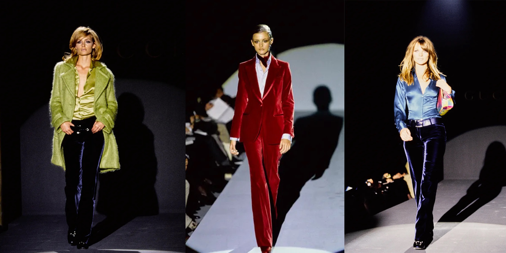

Designer
- Ludovic de Saint Sernin
- FRENCH(Born in Brussels)
- Based in Paris
- Graduated in Fashion Design from l’ESAA Duperré
- Interned at Dior and Saint Laurent
- Embellishment expert at Balmain
- 2018 Spring/Summer Paris Menswear Collection Debut
- Nominated for the 2018 LVMH prize finalist
- Won the 2018ANDAM Prize
- Inducted into the 2019 BOF 500
About
루도빅 드 생 세르넹(Ludovic de Saint Sernin, 이하 LDSS), 발음하기도 쉽지 않은 이 브랜드를 처음 알게 됐을 때 느꼈던 감정은 가히 충격 그 자체였다. 손바닥만 한 옷들로 겨우 가린 아찔한 노출과 곧 엉덩이가 보일 것만 같은 스와로브스키(Swarovski) 미니스커트도 그랬지만 무엇보다 충격적이었던 건 LDSS의 브리프 시리즈. 이제는 LDSS의 시그니처가 된 아일릿 언더웨어는 마치 비밀스러운 취향을 폭로하기라도 하듯, 존재 자체만으로도 보는 이들을 낯 뜨겁게 했다. 한술 더 떠 21 봄/여름 컬렉션에서 선보였던 레더 작스트랩(jockstrap)은 불행인지 다행인지 아직도 그 실루엣이 잊히지가 않는다.
(eyelet: 금속성으로 틀을 장식한 가죽끈을 고정시키는 구멍이나 벨트의 구멍)
섹시, 관능 그리고 섹슈얼리티. 이 세 단어로 대표되는, 아니 이제는 그 자체가 되어버린 브랜드 LDSS. 그러나 여기서 우리가 결코 간과해서는 안될 LDSS의 진짜 매력은 ‘섹스어필’이 아닌 남성의 몸이 지닌 아름다운 곡선을 보여주는 데 있다. 미니스커트 아래로 떨어지는 굵은 각선미는 ‘거부감’에 앞서 ‘아름답다’는 감정을 불러일으킨다. 남성의 몸을 보고 이토록 아름답다고 느낀다는 사실이 필자에게는 다소 위험하게 느껴져 언젠가 한 번은 성정체성에 대해 자문해 볼 지경이었다. 그렇다, LDSS는 위험하다. 그렇기에 justsmalltalk EP.01으로 다른 어떤 브랜드보다 먼저 소개하고 싶었다. 한 번 빠지면 쉽사리 헤어 나올 수 없는 섹슈얼 남성복 브랜드 LDSS, 그 치명적 매력에 대해 이야기해 보고자 한다.
2018년 봄/여름 파리 남성복 컬렉션, 루도빅은 자신의 이름을 내건 브랜드 Ludovic De Saint Sernin를 세상에 선보임과 동시에 이듬해 2018 LVMH Prize 최종 후보에 노미네이트*되는 기염을 토한다. 남성복 디자이너서 자신의 가치를 증명해 낸 루도빅의 LDSS는 2017년 탄생한 신생 브랜드임에도 임팩트 있는 디자인으로 패션계에서 이미 유명했다고 한다. 그뿐만 아니라 2018 ANDAM Prize 수상, 2019 BOF 500 선정*, Woolmark Prize 2020 노미네이트 등 그의 거침없는 행보는 멈출 줄 몰랐다.
여기서 흥미로운 점은 시작부터 현재까지 탄탄대로만 걷고 있는 루도빅도 실은 패션 디자이너가 되기 전에는 어머니의 뜻에 따라 변호사가 될 뻔했다는 것. 그러나 패션에 대한 사랑과 내면의 창조적 욕망이 그를 지금의 루도빅으로 이끌었다는 후문도 있다. 이후 Duperré School of Applied Arts in Paris 여성복을 전공한 루도빅은 디올(Dior), 입생로랑(YSL) 등 파리의 유수 디자인 하우스에서의 인턴쉽 과정을 거치며 실력을 차곡차곡 쌓아 나간다. 그의 첫 공식 직업은 올리비에르 루스테잉(Olivier Rousteing)이 이끌던 발망(Balmain)의 섬유 장식 담당이었는데, 2년간 발망에 몸을 담았던 루도빅은 후에 이 기간 동안 셀 수 없을 정도의 아일릿장식을 손바느질했다고 전한다. LDSS하면 빼놓을 수 없는 아일릿 브리프(Eyelet Briefs)도 어쩌면 그 덕일 수 있겠다.
*2018 LVMH Prize 당시 LDSS와 겨루던 최종후보로는 A-Cold-Wall, Botter, CHARLES JEFFREY Loverboy, Doublet, Eckhaus Latta 등 최근 국내 편집샵에서도 한 자리씩 차지하고 있는 브랜드들이 즐비했다(최종 우승은 일본 디자이너 마사유키 이노의 Doublet이 차지하게 됐다)
현재 LDSS의 파격적인 디자인을 보고 발망, 로에베(LOEWE)와 같이 정적이고 고급스러운 무드를 떠올리기는 쉽지 않다. 사실 그가 동성애자여서인지는 모르겠으나 그에게 있어 남성복은 보통의 ‘이성애자 남성’처럼 지루하기 짝이 없는 것이기도 했다. 그는 본인의 전공을 살려 자신만의 여성복 브랜드를 설립하기로 마음먹는다. 그러나 향후 그의 브랜드 방향성을 결정하는 결정적인 사건이 발생하는데 현재까지 LDSS의 피팅모델을 맡고 있는 라파엘(@raphrsst)을 인스타그램을 통해 알게 된 것이 시작이었다.
루도빅은 그를 불러 자신이 직접 만든 옷을 입혀보기에 이른다. 이때의 충격이었을까, 이를 계기로 루도빅은 남성의 몸에서 여성스러운 옷이 얼마나 아름답게 남성의 몸에서 빛날 수 있는지 깨닫게 됐다고 전한다. 애당초 그의 첫 컬렉션 또한 여성복으로 진행될 예정이었으나, 라파엘이 모든 것을 바꿔놓은 것이다. 여성복을 전공한 탓에 주로 여성복에 자주 사용되는 디테일 혹은 과감한 노출이 LDSS의 디자인에 접목된 것을 볼 수 있는데, 이는 남성뿐 아니라 여성에게까지 LDSS가 어필할 수 있는 매력적인 요소이기도 하다. 사실 루도빅의 이러한 배경은 남성으로써 그가 기존의 남성복 틀을 깨고, 보다 새로운 감정과 관능적인 선을 그의 컬렉션 속에 녹여내는 데 아주 큰 역할을 했다고 여겨진다.
루도빅은 컬렉션에서 그의 자전적 이야기를 풀어내는 것으로 유명하다. LDSS의 첫 컬렉션이 커밍아웃을, 세 번째 컬렉션이 학창 시절 그가 겪었던 성적 혼란을 나타내었듯 퀴어, 성, 젠더 문제를 그만의 방식으로 감각적으로 풀어내고 있는 이가 바로 루도빅 생 세르넹이다. 그러나 루도빅이 유니섹스 혹은 젠더리스한 작업물을 만들고자 생각한다면 오산이다. 그의 말을 빌리자면 젠더리스라는 카테고리 안에 가둬두는 것 자체가 ‘섹시’하지 않기 때문. 그는 그저 남성과 여성 모두에게 있어 자신을 드러내는 방식으로 LDSS가 활용되기를 원한다. 개개인이 자신만의 고유한 아름다움을 드러내는 것이 그가 정의하는 아름다움이었다. LDSS의 주무기인 섹시함을 이용해 사람들을 자극하는 것 또한 루도빅이 원하던 바가 아니었는데, 그것이 사람들을 불편하게만 만들기 때문이란다. 루도빅, 그가 원했던 것은 단지 LDSS의 무드와 관능적인 긴장감이 디자인 속에서 팽팽히 유지되는 것 하나였다. 그것이 우아한 섹슈얼리티의 표현이었고, LDSS의 ‘쿨함’이다. 첫 컬렉션에서 아일릿 가죽 브리프가 그런 존재였던 것처럼.
LDSS 2019 가을/겨울 컬렉션을 착용한 스티브 레이시와 티모시 살라메. 이미지 출처: @ludovicdesaintsernin
티모시 살라메(Timothée Chalamet), 스티브 레이시(Steve Lacy) 등의 인기가 증명하듯, 어쩌면 ‘남자다운’ 남성의 시대의 종말이 오고 있는지도 모르겠다. 조금은 다른 ‘섹시’한 남성들이 주목받기 시작한 지금, LDSS의 에로티시즘은 그 정수를 보여주고 있음에 틀림없다.
Inspiration
Q: Could you describe your work with three inspirations?
A: Pop culture, Art and Sex
Robert Mapplethorpe
관능미와 섹시함으로 대표되는 LDSS 브랜드 아이덴티티에 가장 큰 영향을 미친 인물이 바로 로버트 메이플소프(Robert Mapplethorpe, 1946-1989)다. “아름다움과 악마성은 같은 것이다”라는 말을 남긴 로버트는 적나라한 남성의 몸과 동성애, 에스엠 문화 등과 같은 파격적인 작업물들을 연속해서 선보이며 20세기 가장 영향력 있는 아티스트 중 한 명으로 손꼽히고 있다. 특히나 그의 누드 사진은 고대 조각상을 연상시키는 것부터 성행위까지, 광범위한 피사체를 렌즈 안에 담으며 남성의 아름다운 굴곡을 새롭게 발견한 것으로 이미 유명하다.
그에게 있어 성, 누드, 섹스는 자극적인 소재를 넘어 신성한 것으로, 사진을 통해 우리들의 감춰진 욕망과 이를 숨기며 살아가는 이 시대의 위선을 폭로하기도 했다. 레더 크롭 티, 아일릿 브리프 등과 같이 매 시즌 과감한 노출로 파격적인 행보를 걷고 있는 LDSS의 컬렉션은 마치 로버트 메이플소프의 피사체가 패션을 통해 재현되는 건 아닐까 하는 생각이 들게 한다. 이를 증명하기라도 하듯 루도빅은 그의 첫 번째 컬렉션에 등장한 메쉬 작스트랩만을 입은 소년의 모습은 로버트 메이플소프를 위한 헌정이라고 밝히기도 했다.
LDSS의 독보적인 섹시함에 기여한 또 다른 인물이 바로 구찌의 톰포드(Tom Ford)다. 90년대로 접어들며 고루한 이미지를 벗어나지 못해 경영난에 시달리던 구찌는 울며 겨자 먹기로 당시 신인 디자이너였던 톰포드를 새 구원투수로 영입하게 된다. 그리고 이 결정은 아직까지도 구찌 역사에서 빼놓을 수 없는 기념비적 순간으로 손꼽힌다. 할스튼 스타일 벨벳 힙스터(Belvet hipster), 스키니 사틴 셔츠 등 글래머러스함과 과감한 노출을 내세운 아이템들을 연이어 선보이며 섹시함을 구찌의 새로운 이미지로 대두시킨 톰포드. 모두의 우려와 달리 구찌의 부활을 알리며 한순간에 스타 디자이너의 반열에 오른 그는 컬렉션뿐 아니라 광고 캠페인에서도 과감한 시도를 이어갔다.
‘섹스는 팔린다’라는 아이디어를 프리미엄 브랜드에 이식시킨 톰포드는 여성과 남성이 가진 고유한 신체의 라인을 그대로 노출시키며 섹시함과 쾌락을 대중들에게 각인시켰다. 특히 1996, 1998 컬렉션은 그가 어떤 방식으로 루도빅에게 영감을 줄 수 있었는지 가늠케 할 만큼 강렬했다. 사실 오늘날의 정통 하이엔드 브랜드들을 보고도 여전히 ‘멋’과 ‘우아함’을 느끼긴 하지만 간혹 보이지 않는 틀에 갇혀 있다는 느낌이 들 때도 있다. 물론 브랜드가 이제까지 지켜온 타깃층이 있기도 하겠지만, 좀 더 강렬한 큰 자극을 원하는 필자와 같은 이들에게는 조금은 아쉬운 부분이다. 톰포드의 구찌가 큰 호응을 얻은 것도 아마 고급스럽고 화려한 것들로 치장하려는 프리미엄 고객들의 허영 안에 숨겨진 원초적 욕망을 자극했기 때문이 아니었을까. 그런 의미에서 LDSS가 브랜드 아이덴티티를 ‘프리미엄 섹시’로 가져간 것은 아주 영리한 결정인 것도 같다.
이미지 출처: 구글이미지

케이트 모스(Kate Moss), 크리스티 털링턴(Christy Turlington), 나오미 캠벨(Naomi Campbell), 신디 크로포드(Cindy Crawford). 슈퍼모델이 스타덤의 등용문이던 그 때, 도발적이고 화려했던 시절, 관능의 1990년대. 루도빅은 이 시대를 관망하며 무슨 생각을 했을까.
이미지 출처: 구글이미지
Collection
LDSS의 컬렉션은 루도빅 자신을 비추는 거울이기도 하다. LDSS의 처음과 가장 최근의 모습을 정리해 보았다.
Spring/Summer 20182017년 6월 공개된 루도빅의 첫 컬렉션은 그의 자전적 고백이었다. 성년이 되어가는 루도빅의 솔직한 이야기였고, 그의 커밍 아웃이었다. 컬렉션 전체를 관통하는 남성의 관능적인 몸의 표현은 그의 정체성을 나타내 주었으며, 룩 하나하나를 자세히 들여다보아도 그의 개인적인 이야기로 가득했다. 교토 여행 당시 구매했던 머티리얼 백에서 아이디어를 얻은 미니 백과 크리스티나 아길레라의 ’Stripped’의 앨범커버에서 영감을 얻은 아일릿 팬츠 그리고 로버트 메이플소프를 헌정하기 위한 작스트랩까지. 그가 사랑했던 예술, 문화, 일상이 이 컬렉션 안에 자연스레 스며 들어 있었다.
남성 모델로만 이루어진 컬렉션이었지만 사실 LDSS의 룩은 여성들에게까지 소유하고 싶은 욕망의 대상이었다. 이 또한 패션에 관한 루도빅의 철학이 잘 드러나는 부분이라 볼 수 있는데 그에게 있어 옷이란 남성과 여성을 구분 짓는 수단이 아닌 자기표현의 매개체일 뿐이었다. “Self-expression, the search of identity and sexuality are infinite sources of inspiration”. 루도빅이 우리에게 전하려 했던 LDSS의 첫 번째 메시지다.
Autuum/Fall 20212021 가을/겨울 컬렉션과 함께 한 편의 영상, Do You Remember 가 공개됐다. 지난 봄/여름 시즌 쿼런틴 라이프를 맞은 우리를 위한 e-boys를 선보인데 이어, 이번에는 답답한 삶에 지쳐만 가는 우리를 자유로웠던 과거와 그래야만 하는 미래로 소환한다. 마치 하이틴 영화의 한 장면처럼 우리가 상실한 시간 속에서 자유롭게 뛰노는 주인공들과 그들 위에서 빛나는 스와로브스키 크리스털 피스들은 클럽, 파티 문화를 그리워하는 이들의 마음에 불을 지피기에 충분했다.
사랑, 우정, 유대를 모티브로 이번 가을/겨울 컬렉션에서는 지극히 여성적인 요소를 남성의 몸에 거부감 없이 녹여낸 모습을 보여주며 LDSS가 ‘젠더리스(루도빅은 이렇게 부르는 걸 싫어하겠지만)’ 패션의 새로운 강자임을 다시 한번 증명해 냈다. 특히 금방이라도 엉덩이가 드러날 것만 같은 미니스커트는 이번 컬렉션에서 가장 눈길을 끄는 아이템. 꽤 많은 스커트들이 등장했던 2021 가을/겨울 남성복 컬렉션이었지만 그중에서도 단연 최고가 아닐까 했던 작품이다. 아찔한 노출 의상임에도 불구하고 이미 많은 젊은 남성들이 LDSS의 추종자를 자처하는 데에는 다 이유가 있다. 하루빨리 순수한 즐거움으로 가득 찬 파티를 만끽하길 바라며, 루도빅의 작품을 옷장에 미리 마련해 두는 것도 좋을 것 같다.
Made to Order

스와로브스키 크리스털을 이용한 핸드메이드 피스들이 21년 봄/여름 컬렉션을 통해 공개됐다. 특히 이번 컬렉션 공개와 동시에 LDSS는 모든 스와로브스키 크리스털 피스들을 커스텀 오더 방식으로 제작한다고 밝혔는데, 안 그래도 파격적인 LDSS의 디자인에 스와로브스키 크리스탈이 화룡점정을 찍은 것이다. 레인보우 드레스와 홀터넥 티셔츠 그리고 케이지 스커트까지, 영롱하게 반짝이는 스와로브스키 크리스털을 이용한 피스들은 모두 파리의 아뜰리에에서 수개월간 수작업으로 공을 들인 끝에 탄생하게 된다. LDSS의 독보적인 무드에 퀄리티까지 더해진다니. LDSS의 가격표가 이제 조금은 이해가 된다.

사실 LDSS의 스와로브스키 크리스털 사랑은 이번이 처음이 아니다. 2018년 슈퍼모델 컬렉션에서 ‘백만 달러 브리프’로 처음 모습을 드러낸 스와로브스키 크리스털은 가을/겨울 컬렉션의 엔딩 무대를 통해 다시 등장하며 LDSS의 또 하나의 아이덴티티가 될 것임을 예고했다. 두아 리파(Dua Lipa), 도자 캣(Doja Cat), 스티브 레이시(Steve Lacy), 솔란지(Solange) 등 이미 많은 셀럽들의 앨범 커버 와 뮤직비디오까지 장식하며 그 화려한 면모를 과시한 스와로브스키 크리스털 피스. 길게는 수개월의 제작 기간을 가지기도 하지만 언젠가 한 번쯤 있을지 모르는 화려한 외출을 위해 옷장 안에 하나쯤 구비해 보는 건 어떨까. 상상만으로도 즐겁다.
Item
필자의 사심이 잔뜩 들어간, LDSS의 아이코닉한 아이템들을 모아봤다.
Eylet Briefs
LDSS의 팬이라면 모두 예상했겠지만 이 아이템을 빼놓고 LDSS를 논할 수는 없을 것이다. 2018년 루도빅의 데뷰 컬렉션에 등장해 지금까지도 매니아 층의 꾸준한 사랑을 받고 있는 LDSS의 상징 아일릿 브리프. 루도빅의 첫 컬렉션부터 모습을 드러낸 발칙한 아일릿 장식은 보는 이들로 하여금 오만가지 상상을 떠올리게 하지 않았을까. 특히 다소 민망한 부분에 위치한 매듭 디테일은 특히 70년대 뉴욕 에스엠 씬의 본디지 형태를 연상시키며 마니아들의 은밀한 욕구에 불을 지피기에 충분했다. 30만원이 훌쩍 넘는 가격에도 불구하고 매 시즌 프리미엄 언더웨어로써의 입지를 단단히 굳히고 있는 아일릿 브리프는 지금의 LDSS를 있게 한 일등 공신이라 할만 하다 . 사실 구매를 자랑하기에도 다소 민망한 아이템이지만 아일릿 브리프를 입은 하루는 왠지 자신감이 넘칠 것만 같다. LDSS를 소비하는 이들에게 아일릿 브리프는 속옷 그 이상의 판타지임이 틀림없다.
XXL Crystal Clear Chocker
한때 국내에서도 20대 초반 여성들 사이에서 심심치 않게 유행했었던 초커가 LDSS의 ’21ss에도 모습을 드러냈다. 아일릿 장식과 함께 LDSS의 새로운 DNA로 거듭난 스와로브스키 크리스털과 함께한 XXL Crystal Clear Choker는 가녀린 여성의 목이 아닌 굵직한 남성의 목선 위에서 영롱하게 반짝이고 있다. LDSS의 무드가 잔뜩 묻어나는 반지, 목걸이도 함께 공개됐지만, 무엇보다도 LDSS의 도발적인 면모를 가장 잘 보여 줄 수 있는 주얼리는 초커가 아닐까 한다. 디자인 혹은 가격적인 측면에서 스와로브스키 크리스털 Made to Order 제품이 다소 부담스러운 이들에게는 LDSS의 프리미엄 핸드메이드 퀄리티를 느낄 수 있는 좋은 기회가 될 것이다.
Eylet Denim Jacket
이미지 출처: FARCETCH
개인적으로 가장 소장하고 싶은 LDSS의 아이템이 바로 이 Eylet Denim Jacket이다. 아일릿 소매와 단추를 없애고 배치한 실버 링의 두 디테일한 무드가 적절히 어울려 고급스러우면서도 묘한 분위기를 연출하는데 일품이다. 크롭 핏의 짧은 기장감 또한 LDSS만의 섹시한 느낌을 더해준다. 런웨이 중에는 모습을 드러내지 않았던 자켓인지라 존재감이 덜한 것도 사실이지만 그런 만큼 유니크한 매력도 배. 아직까지 다른 LDSS의 제품들이 과하게 느껴지는 이들에게도 LDSS 입문용으로 좋은 아이템인 듯싶다. 크롭핏을 애정 하는 필자에게는 언젠가 꼭 소유해보고 싶은 아이템.
Personal Comment
어떻게 발음해야 할지 한참을 고민하게 만든 Ludovic de Saint Sernin, 이 브랜드가 필자에게 각인된 방식은 좀 남달랐다. 보통의 브랜드가 그 브랜드 특유의 디테일이나 특정 룩 이미지로 각인됐던데 비해 LDSS는 하나의 추상적 개념으로 자리 잡아 있다. 섹시하다든지 관능적이라든지는 하는 ‘말들’은 사실 중요하지 않다. 어떻게 표현해도 적절한 LDSS는 게이패션을 뛰어넘는 하나의 장르를, 새로운 남성 패션의 왜곡되지 않은 아름다움을 선사해 주었기 때문이다. 또 다른 누군가가 LDSS의 섹시함을 알아봤다면, 이는 이미 LDSS의 스타일이 남성 패션의 범주에 자연스레 스며들었다는 것을 의미하기도 할 것이다. LDSS는 또 다른 의미에서 ‘용기’다. 이 브랜드는 단순히 돈만 가지고서는 소유할 수 없다. 브랜드의 무드를 이해하고 그 아름다움을 온몸으로 표현할 수 있는 자만이 가질 수 있는 진짜 ‘프리미엄’ 브랜드가 Ludovic de Saint Sernin인 것이다.
References
- Ludovicdesaintsernin
- Vogue
- WWD
- LVMH Prize
- Woolmark Prize
- i-D Magazine
- 10magazine
- Kalblut-magazine
- HERO magazine
- HIGHSNOBIETY Magazine
- icon Magazine
- AnotherMan Magazine
- VanityTeen